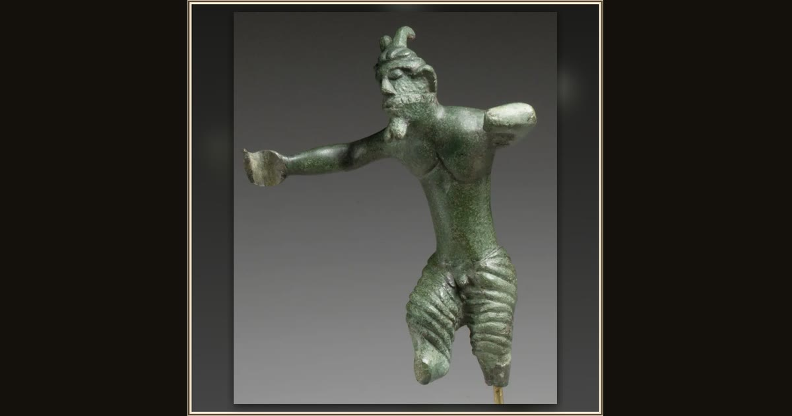

Bronze statuette of Pan
Greek, Peloponnesian · late 5th–4th century BCE · met
A Peloponnesian bronze of the goat-legged god Pan, who met the runner Philippides on Mount Parthenium and asked why Athens neglected him (6.105.2) Explore its place in Herodotus's Histories, Book VI, chapter 250.